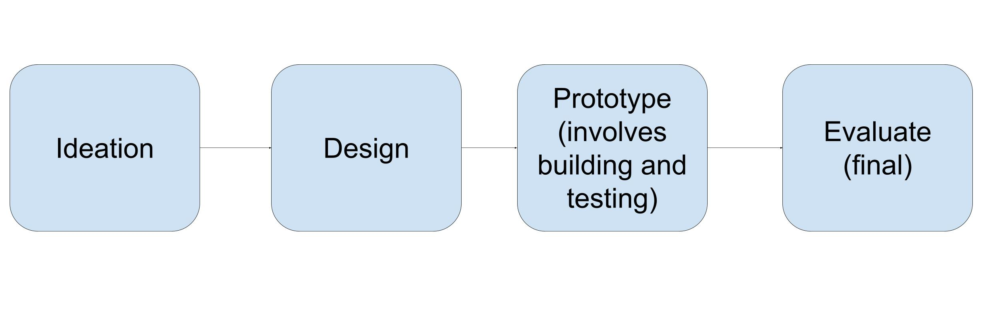

Motivation: The Disability Dongle
Liz Jackson, an advocate for disability-led design practice defined the disability dongle as assistive technologies created to solve "a real or perceived problem experienced by disabled people, but which was built without including disabled people in the design process."Disability Dongle rhetoric instills in students the value of a quick fix over structural change, thus preventing them from seeking out, participating in, and contributing to existing inquiry.In that vein, we seek to provide a framework that leads designers to ask constructive questions about their work and seek solutions with real impact for people with disabilities.
Who are you?
You are a designer, researcher, engineer or student planning to build or building an assistive technology targeted towards people with disabilities. You want to create the best possible outcome for your technology such that it doesn’t pose any harm to the intended users of your product. You will use this tool to identify any potential harm that your product might pose.How to use?
There are seven considerations that you need to consider when you are building the assistive technology: problem definition, solution definition, cost, usage, rhetoric, creation process and impact of technology. Under each of these considerations, there is a series of questions that you answer to the best of your ability to help you interrogate these considerations. You can answer these questions based on what you have already completed in your design process or what you plan to do. It is better to answer these questions as early as possible in the creation process to make it easier to reframe your work, if needed.Based on your answers to the questions, consider the suggestions.
Considerations
Note the intended users are the people who this assistive technology is meant to or can serve. We don’t use the general term person with disability to describe the user - even though it adds a more 'human' element to describe the audience - to the type of people who assistive technology is made for, because it is too general. For example, there needs to be a distinction between a ‘person with a disability’ being involved in the design process of the technology vs a person with the specific disability that the technology is meant to target.
Problem Definition
Questions
- What is the ‘problem’ that the technology aims to solve?
- Based on the 'problem' defined, has the ‘problem’ been defined by the intended users?
- If so, what evidence can be provided to support this claim?
- Personal experience i.e. you are a possible intended user for this technology
- Initial focus groups or interviews with intended users
- Academic papers published by the intended users or involved initial focus groups with intended users
- Non-academic sources (blog posts, social media, etc) published by the intended users
- If not, who defined the ‘problem’?
- You i.e. you are not a part of the possible intended users
- Academic papers not published by the intended users or didn’t involve initial focus groups with intended users
- Non-academic sources (blog posts, social media, etc) not published by the intended users
For example
For example
Suggestions
If the 'problem' hasn't been defined by the intended audience...
- Consider finding a co-designer or collaborator from the intended users or finding an accessibility consultant.
- If that is not possible, consider running a focus group with the intended audience. Otherwise, conduct a literature review with sources from the intended audience that corroborate the claim.
If you cannot complete any of the previous steps:
- And you are at the initial stages of your creation process (i.e. ideation), consider finding another problem to solve.
- And you are at later stages of the creation process (e.g. the prototyping phase), consider broadening the scope of the technology beyond assistive technology.
Why?
- This is important because although the technology might be useful in the realm of innovation,
it won’t be useful as an assistive technology.
Solution Definition
Questions
- How does the technology solve the ‘problem’?
- Based on the solution defined, does the solution the technology offers expect the intended user to conform to normative standards? In other words, does the technology expect the intended users to change something about themselves because it is a norm society expects them to conform to?
- Are there other ways the ‘problem’ could be solved without the introduction of a new technology?
Suggestions
If the solution expects the intended user to conform to normative standards...
Think about why a framing such as this is problematic and can enact harm on the intended users. Then, reframe your solution such that it doesn’t have these expectations on its users or consider broadening the scope of the technology beyond assistive technology.If there are there other ways the ‘problem’ can be solved without the introduction of a new technology...
- Then, if your ultimate goal is to build a new and innovative technology, consider broadening the scope of the technology beyond assistive technology.
- Or, if your ultimate goal is to solve the ‘problem’, consider pursuing the low-tech or non-tech solution instead.
Guiding Examples
- Expectation of conforming to normative standards:
- Availability of low-tech or no-tech solutions:
Counterventions: a reparative reflection on interventionist HCI: the SayWAT wearable device expects autistic people to conform to normative standards of speech.
Stair-climbing wheelchairs were created to solve the problem of inaccessible pathways and the lack of ramps. If your ultimate goal is to have more accessible pathways, then rather than looking for new tech to build, look into ways you can increase ramps in your local community through advocacy.
Suggested Readings
-
Readings on Techno-Solutionism: TBD
Cost of Technology
Questions
- How often does this technology need to be purchased and are there other parts that need to be purchased regularly?
- One time purchase for everything
- One time purchase for main component, and weekly/monthly/annual purchases for smaller components
- Weekly/Monthly/Annual purchases for everything
- How much does this technology cost for someone to purchase it initially without any insurance or other assistance?
- What is the cost per month/year to purchase this technology in its entirety?
- For each common insurance company, what is the level of coverage that this technology has and how much would the intended user pay?
- With this coverage, what is the cost per month/year to purchase this technology in its entirety?
- Are there other avenues that this technology can be purchased without insurance at a reduced price or for free?
- With this assistance, what is the cost per month/year to purchase this technology in its entirety?
For example
Suggestions
If the technology incur costs over a month or year that make it expensive for the intended audience with or without insurance...
Reflect why the technology incurs such costs. Is the technology expensive from the get-go or does it accumulate costs over time? Also, reflect on how these costs will translate into people’s lives. Then, based on these reflections, problem solve where to reduce costs to make it more affordable or how the intended users can use external help such as government/non-government programs that can help people afford it.Suggested Readings
-
Readings on burden of cost of AT: TBD
Usage of Technology
Questions
- In what ways will the intended users be helped to learn how to use the technology?
- Instructional videos/pamphlets
- Sessions with a professional
- Have any studies been conducted to test whether the intended users can easily learn how to use the technology?
- Are there any affordances that the technology offers that makes it easy to use?
For example
For example
- It is a technology that is similar to a technology that is part of the intended user's life.
Suggestions
If the technology difficult to learn how to use and/or offers no affordances to the intended users...
- If you are in an earlier stage of the creation phase (e.g. prototyping phase), consider conducting a series of evaluations with the intended audience
- If you are in a later stage of the creation phase, consider creating informational material alongside the technology and conducting an evaluation of how well these materials work.
For example
-
An information material that is a printed paper won't be helpful for someone who is blind.
Instead, a better option is material that is offered as an online HTML file or alongside a braille
hand guide.
Guiding Example
A company produced an adaptive game controller for people with upper body motor impairments, but made the packaging inaccessible. Later due to player response this was changed. If they did testing earlier on with the packaging, they wouldn’t have had this problem.
Rhetoric of Technology
For rhetoric, the texts that should be analyzed are as follows: For research papers look at the wording in the paper and other supporting material published by the creators. For products, look at the promotional material and other materials published by the creators. Finally, for both projects also look at the informal messaging you use during the creation process (e.g. emails, meetings, etc.)
Questions
- Does the messaging around the technology involve harmful terminology? (Answer with reference to UN list of terminology to avoid)
- Does the messaging around the technology focus more on the innovation than the assistance it provides to the user?
Suggestions
If the messaging uses bad terminology...
Reframing the messaging you use, based on the provided resource.If there is more focus on the innovation of the technology...
Think about what the purpose of creating this technology has been for you. Is it to create something innovative or is it to help people? If innovation takes a higher importance, consider broadening the scope of the technology beyond assistive technology. If helping people is more important, consider focusing more on the benefits and impact the technology has on the intended audience in its messaging.Suggested Readings
-
Readings on importance of language in accessibility: TBD
Creation Process of Technology
The following a simplified version of the creation process of the assistive technology:
Questions
- For each stage above, highlight the level of involvement of the intended users at each stage
- Disability-led (at least 1 person with disabilities is in charge and has agency and power)
- Participatory, Co-design, and/or Disability-centered (at least 1 person with disabilities is treated as an equal to other decision-makers and considered a "subject matter expert" in matters related to their disability)
- "Inclusive" (person with disabilities are present in some way, but their role isn't explicitly equal in power with decision-makers)
- Participant/user (typically brought in to evaluate as part of a study or test but don't have active power or agency to make decisions)
- Not involved at all
The following are the different possible levels of involvement:
Suggestions
If there is a lack of involvement of people with disabilities in the creation process...
- If you are at the initial stages of the creation process, plan out in what ways you can involve the intended users into different stages of the creation process. Start by looking into the concepts of co-design and participatory design.
- If you are in the later stages of the creation process, look into how you can involve the intended users as participants to evaluation studies, preferably during the prototyping stage rather than only at the end. Another helpful resource is to use an accessibility consultant to assess the technology.
Guiding Example
Many dongles do not involve people with disabilities at all in the creation process or at a minimum only include them at an evaluation stage towards the end.
Suggested Readings
-
Readings on participatory design and co-design:
-
Interdependence as a framework, Bennett et al
"Focusing solely on independence - on whether an individual achieves a task autonomously - leaves out important factors that can help us for example, anticipate the awkward aspects of social interactions and the roles of policy, labor, and materials that shape infrastructural-level decisions"
Impact of Technology
Questions
- What are the next steps that you plan on taking to further develop this technology?
- Who will carry out these next steps to further develop this technology?
- Who will finance and sustain the production of this technology in the future?
Suggestions
If there is a lack of a plan for how this assistive technology will be sustained in the future...
Think about what your goal for this assistive technology is and whether impact is a part of that goal. Do you truly want this technology to be a part of people’s lives after its inception? If so, consider setting up a detailed plan on how you can continue to develop this technology, finance it and bring it about to the world for people to use. If not, why create it?Guiding Example
A lot of dongles come from student projects, where the student’s intention is to only produce something for the class with no intention of further developing it after the class has ended.
Suggested Readings
-
Readings on parachute research: TBD